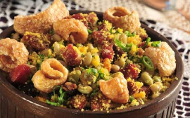
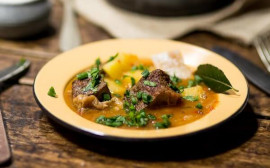
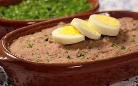

Servida com arroz branco, farinha de mandioca e molho temperado feito com o próprio caldo do feijão.

Um clássico mineiro feito com feijão cozido misturado com farinha de mandioca, torresmo, linguiça, ovos fritos e couve bem fininha.

Mandioca com carne de boi (costela). A vaca atolada está muito presente quando a temperatura dos termômetros começa a cair. A origem do nome é justamente porque a carne fica embrenhada em meio à mandioca cozida.

O frango com quiabo é um clássico, muito comum nas mesas dos mineiros e também nos restaurantes típicos. Não tem como vir a Minas e não provar esse prato.

É um feijão cozido, batido e engrossado com farinha de mandioca ou de milho. Rodelas de ovos cozidos, torresmo e cebolinhas são os típicos itens de decoração na receita.
É possível pedir o torresmo mais crocante, feito só da pele, ou uma opção com mais carne. Na versão de rolo ou individual, uma fatia larga de carne tem a pururuca na ponta.